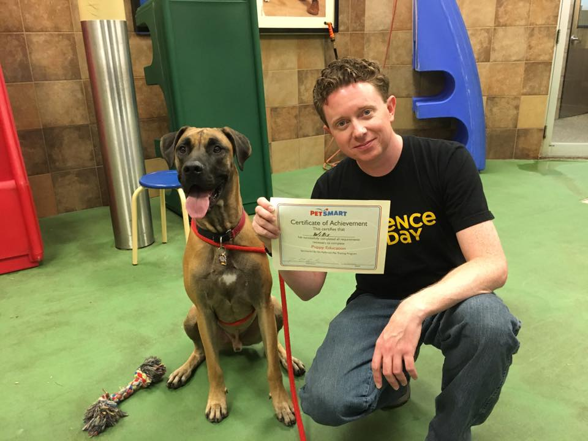

about me
I recently spoke by phone with PBA’s Ken Maiden, and was advised that sending application material by e-mail would be the best way to apply for multiple positions with WABE. I did so, and then decided to also create a quick website, featuring the same information. This is the result.
I’m doing all of this because I’d love to return to public radio (after about a year’s absence from it, and my related relocation to Atlanta, and my seventh state of residence).
As my professional background has potentially made me a qualified applicant for several of the jobs with (apparently) open hiring processes, I ask that you regard this website, together with its linked materials, as my notice of formal application for the following (WABE.org-linked) jobs, and any others at WABE/PBA for which you may deem me to be potentially qualified.
Operations CoordinatorOperations Assistant
Radio Producer - Closer Look
News Editor
Audio/Podcast Producer
Radio Producer - City Lights
You can find links to pertinent text documents and audio material, on the other pages - easily reached by using the navigation menu in the upper-right corner.